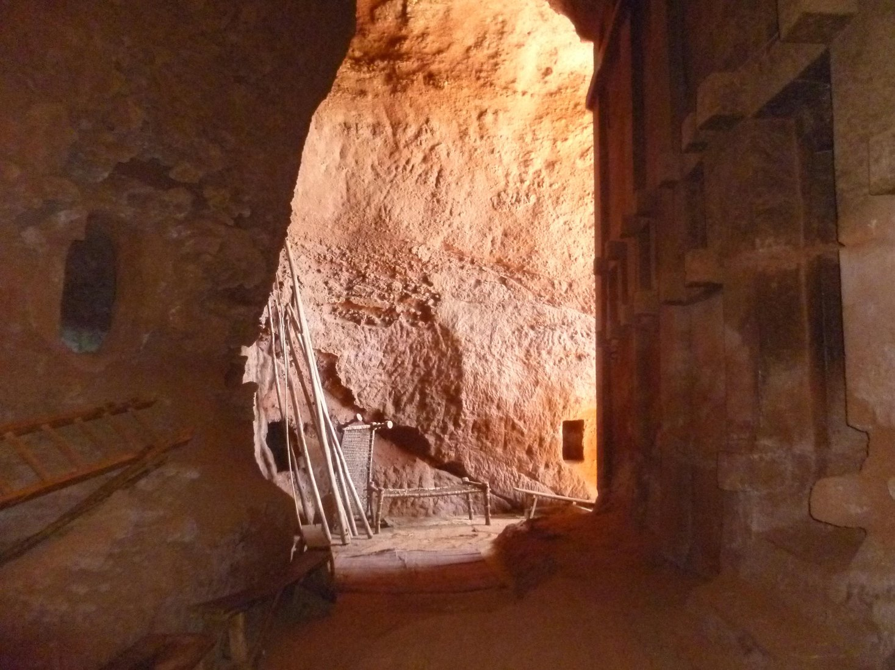

Curiosità dal mondo · Etiopia
Lalibela, le chiese che prendono forma togliendo la roccia
In Etiopia, undici chiese medievali invitano a pensare all’architettura anche come a un lavoro di sottrazione.
Approfondimento giornalistico con fonti documentate.
- Etiopia
- Cultura e patrimonio
- Curiosità dal mondo

Siamo abituati a immaginare un edificio come qualcosa che cresce, elemento dopo elemento. A Lalibela lo sguardo incontra un’altra possibilità: la costruzione ricavata dalla roccia. La curiosità non riguarda soltanto l’effetto delle forme, ma il modo in cui furono ottenute. È una storia che dà al vuoto, agli scavi e ai passaggi un’importanza pari a quella dei muri.
La roccia diventa architettura
L’UNESCO riconosce a Lalibela un insieme di undici chiese medievali scavate nella roccia. Lavorare per sottrazione significa liberare forme e spazi da una massa già presente, anziché assemblare ogni parte come in un edificio ordinario. La definizione di chiese rupestri comprende un complesso articolato: non va trasformata nell’idea che ogni costruzione sia identica alle altre. Il dato che accomuna la lettura del sito è il rapporto diretto fra roccia e architettura. La materia del paesaggio diventa allo stesso tempo struttura, limite e luogo di culto.
Una storia che richiede cura
I materiali UNESCO dedicati alla conservazione di Lalibela richiamano la necessità di proteggere questo patrimonio e comprenderne le condizioni. È un aspetto che può sembrare meno immediato della meraviglia visiva, ma ne fa parte. Un luogo scavato nella roccia non diventa automaticamente immutabile: custodirlo richiede studio e lavoro. Spostare l’attenzione sulla conservazione aiuta anche a raccontare il sito senza separare la sua bellezza dalle responsabilità che comporta. Il valore di un monumento comprende ciò che viene fatto per trasmetterlo, non soltanto ciò che sopravvive.
Fonte: UNESCO · Conservazione delle chiese rupestri di Lalibela.
Un diverso modo di osservare
Lalibela invita a guardare anche ciò che manca: la roccia rimossa, il vuoto che permette il passaggio, la distanza fra un volume e l’ambiente intorno. È un esercizio che rende meno scontata l’idea stessa di costruire. Nel racconto di viaggio, la curiosità può partire proprio da questo cambio di prospettiva. Non servono leggende presentate come prove o spiegazioni impossibili. La capacità umana di trasformare la materia, insieme alla continuità della vita religiosa del luogo, offre già un tema profondo da conoscere e da raccontare con rispetto.
Ti incuriosisce Etiopia? Continua a esplorare il giornale di Click&Viaggia oppure condividi con il team la tua idea per una prossima partenza.
Testo originale della redazione basato sulle fonti riportate. Non è un’intervista né un racconto di un viaggio di Daniele. Le fotografie illustrano il paese e mantengono la licenza indicata. L’articolo non costituisce un’offerta di viaggio.